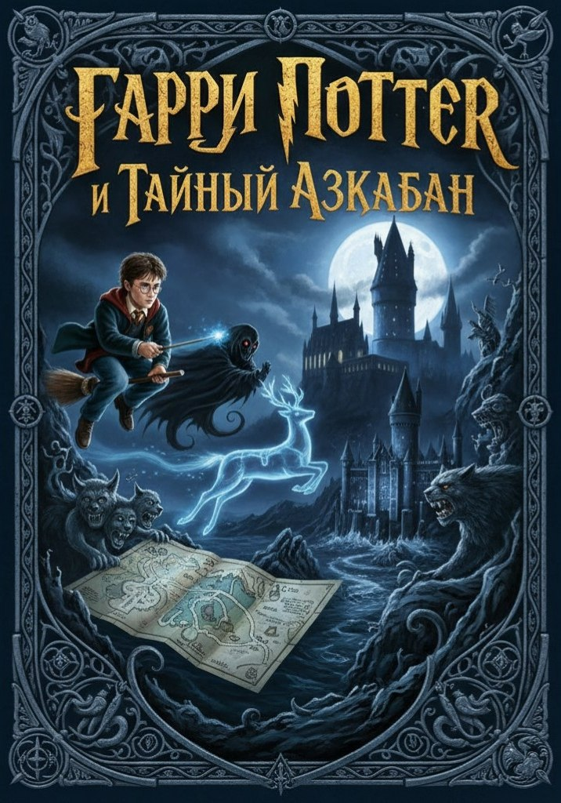

В книге «Гарри Поттер и Тайный Азкабан» Гарри внезапно узнаёт, что Азкабан вовсе не тюрьма, а крайне застенчивое место, которое прячется от всех и потому всё время оказывается не там, где его ищут. Коридоры тюрьмы шепчут несвязные признания, камеры переезжают без предупреждения, а дементоры работают по сокращённому графику, потому что им стало грустно от собственной грусти. Гарри бродит среди дверей, которые открываются только при полном отсутствии намерений, и чувствует, что страх здесь скорее декоративный элемент, чем реальная угроза.
Постепенно выясняется, что Тайный Азкабан существует сразу в нескольких версиях, каждая из которых уверена, что она запасная. Заключённые оказываются мыслями, которые когда-то посадили за излишнюю серьёзность, а охрана состоит из подозрительно молчаливых пауз. В финале Азкабан сам себя раскрывает, смущается и исчезает, дементоры уходят учиться пению, а Гарри понимает, что самая надёжная тюрьма — это сюжет, который решил не объяснять, зачем он вообще начался.